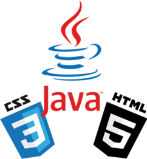

Mes compétences
Je commence à apprendre le langage HTML et CSS en plus du langage Java qui sera mon activité principale. Voici quelques exemples de mes derniers apprentissages :
- Crée un site responsive à partir d'une maquette en HTML et CSS.
- Projet HelloWorld java.
J'ai choisi la formation back-end car je préfère gérer la partie immergée de l’iceberg, la gestion et la structure du site et des données plutôt que son design et l’interface utilisateur. Il a donc fallu choisir un langages et mon choix s'est porté sur Java pour sa portativité et sa polyvalence.
Quand j'aurai fini ma formation OpenClassRooms et obtenu mon diplôme, je souhaite monter une start-up.